Electrical Symbols
Electrical Symbols
Voltage Indicators
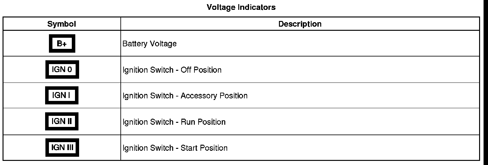
General Icons
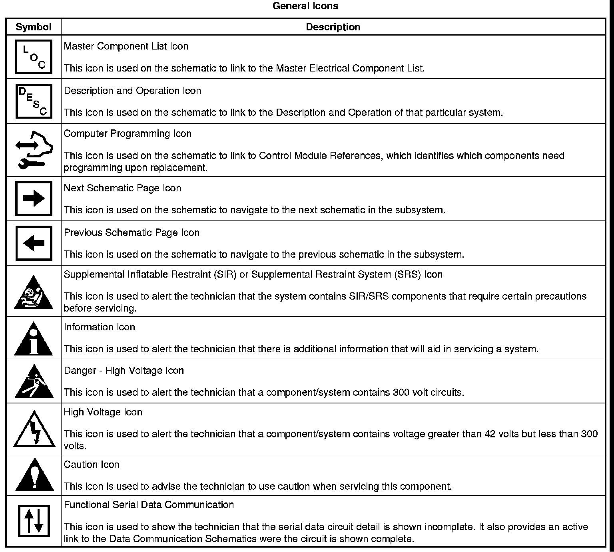
Switch Position Icons
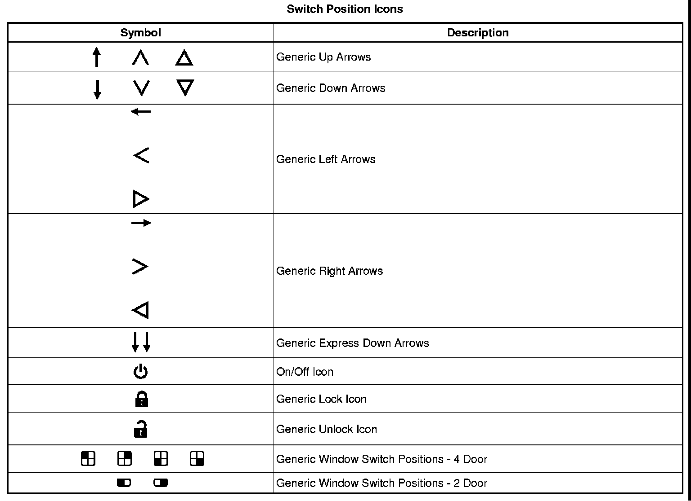
Module Circuit Function Icons
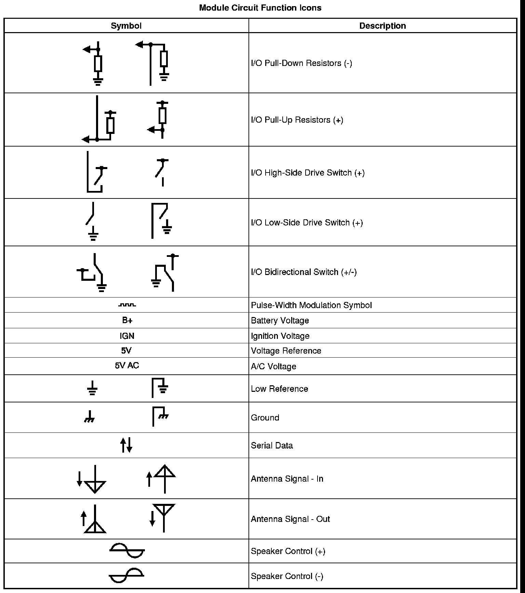
Harness Components
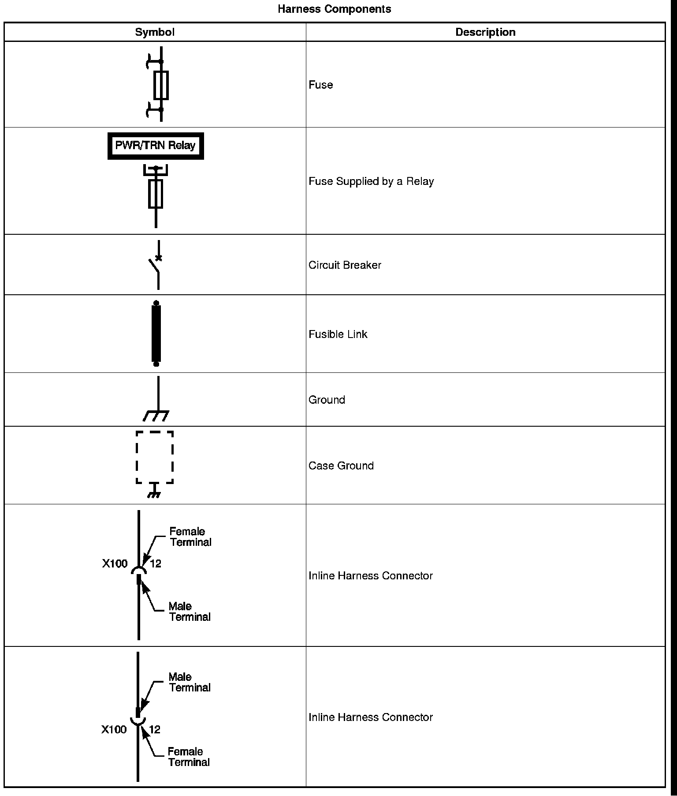
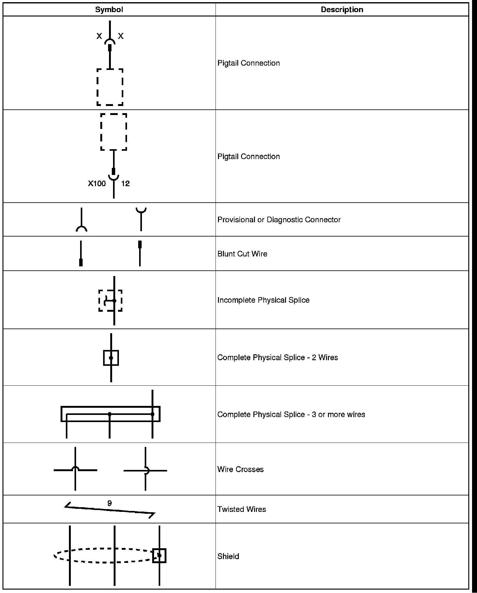
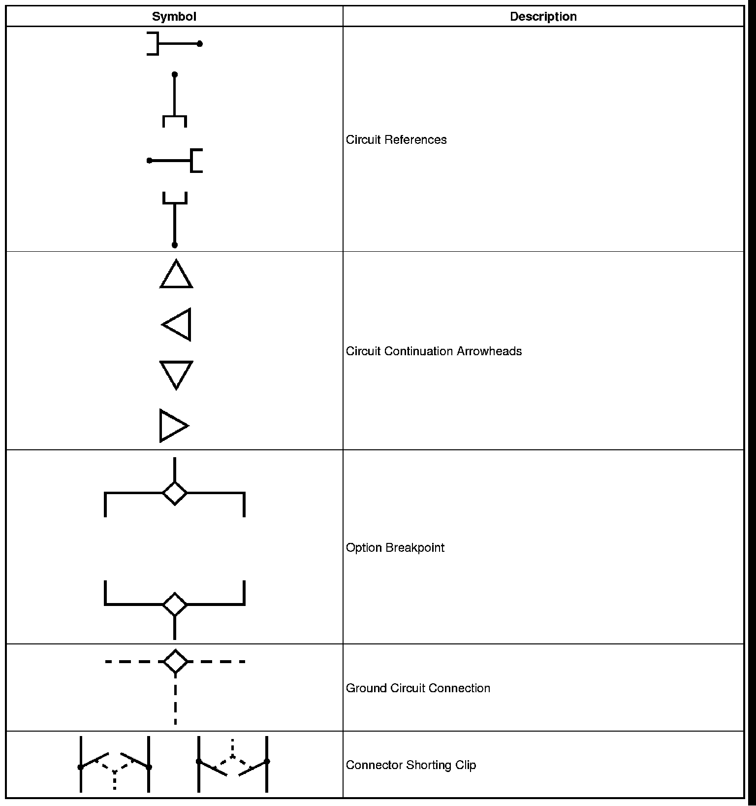
Component Parts
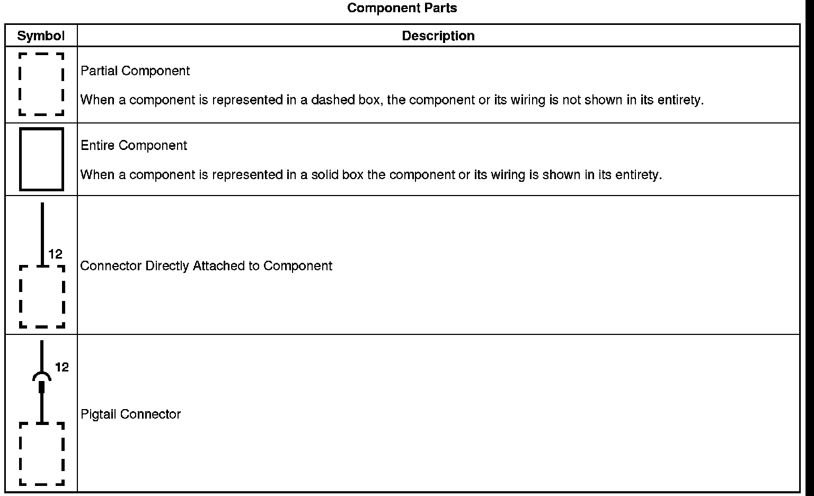
Switches and Relays
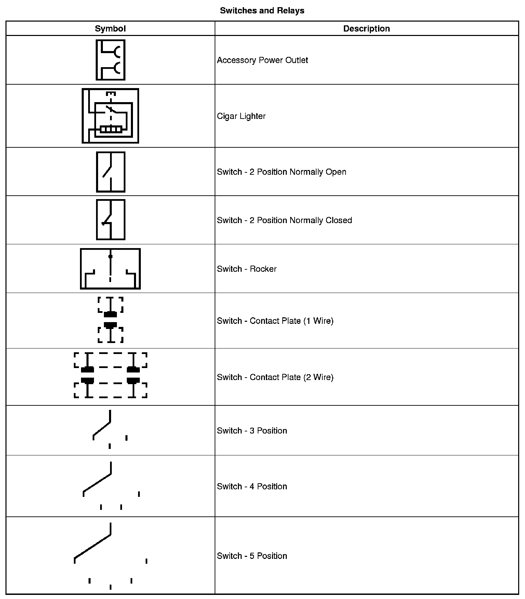
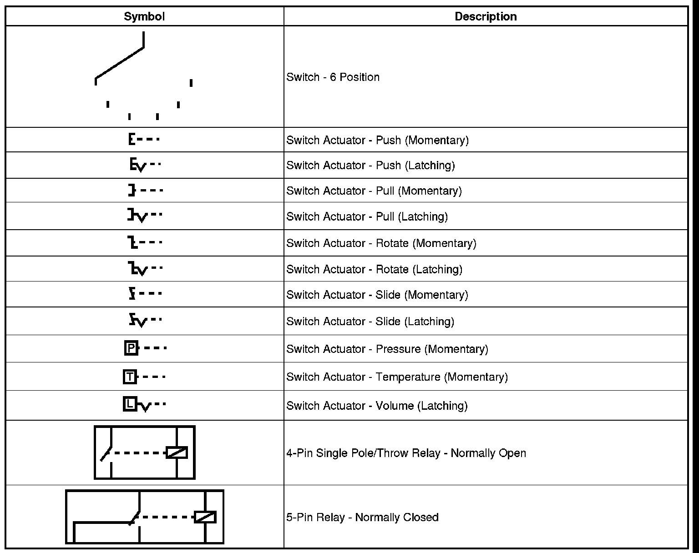
Devices and Sensors
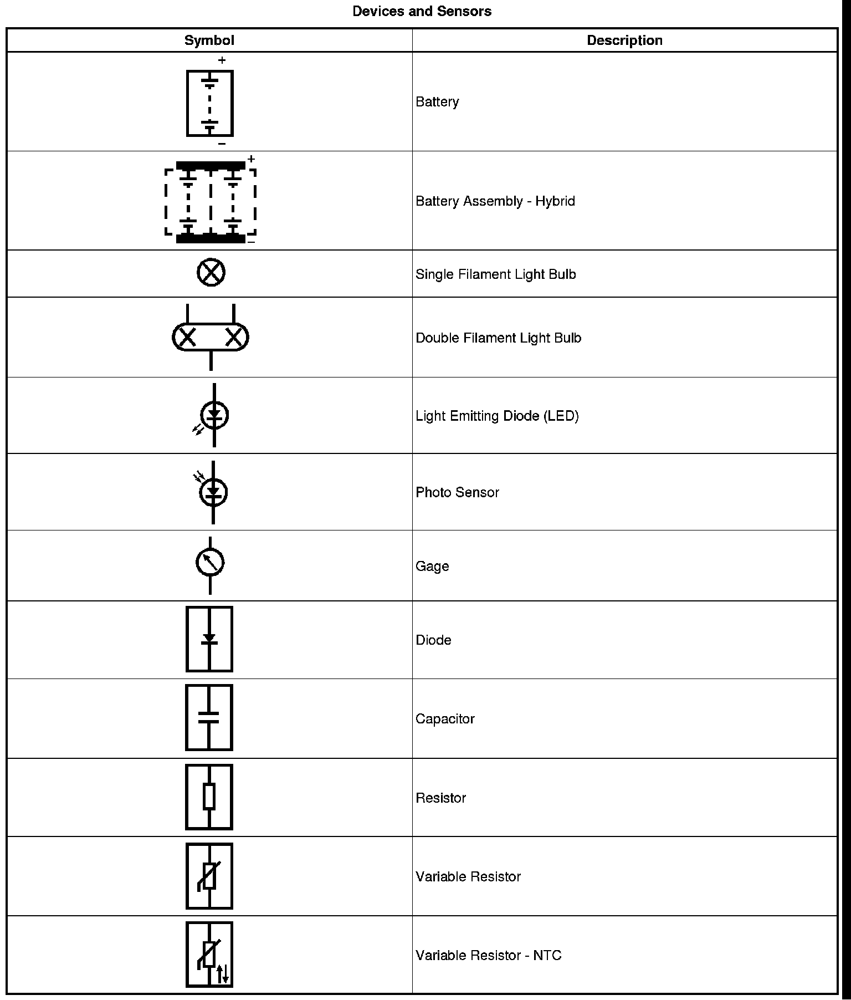
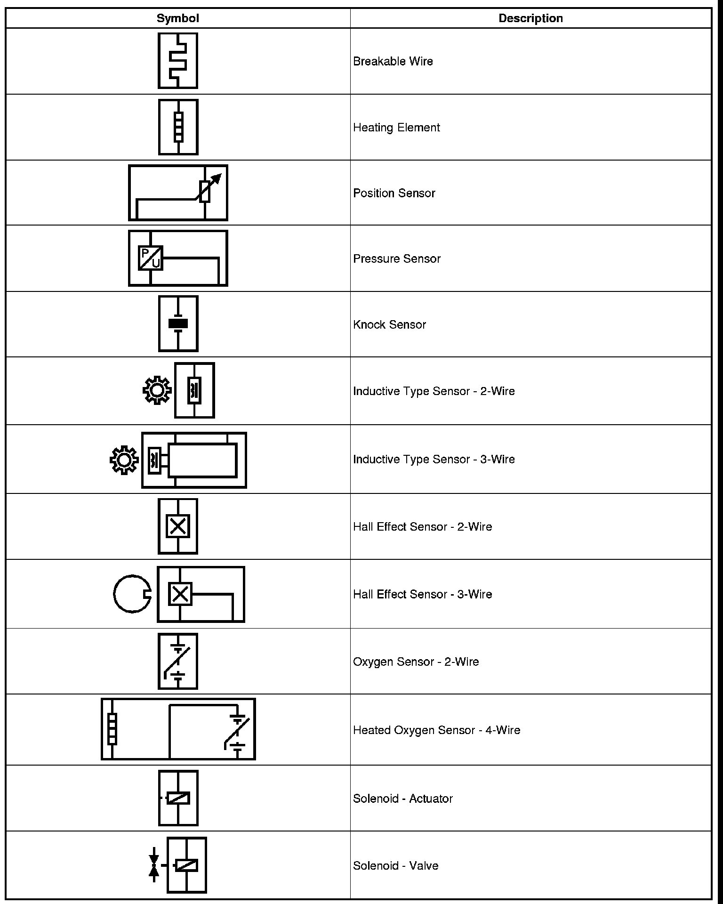
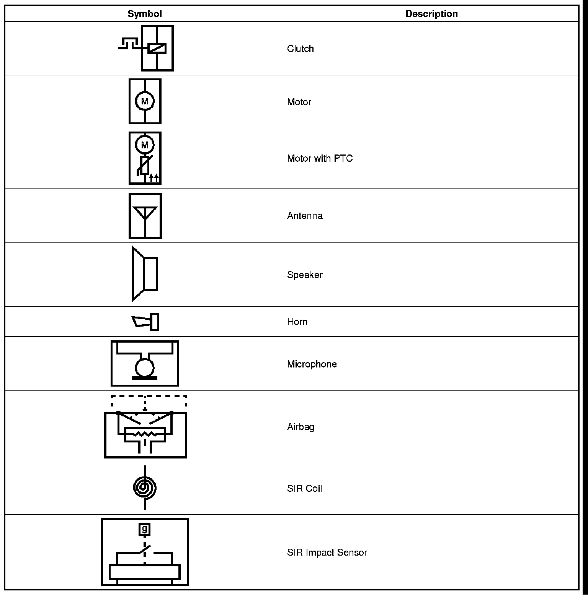